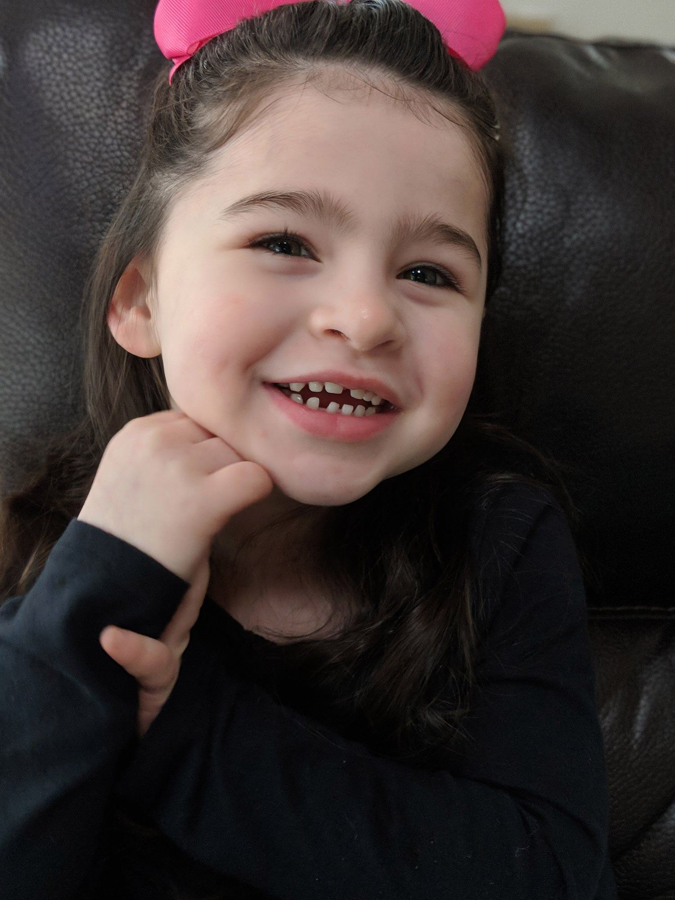

Lia
America Cerebral Palsy & EpilepsyTo know Lia is to know the true definition of pure joy. It radiates in all that she does. Lia loves life more than anyone I've ever met.
A neonatal stroke survivor and congenital heart defect warrior now living with cerebral palsy, epilepsy and apraxia of speech, Lia works so hard every day, but never lets it show. Every challenge she faces, Lia meets with determination and bravery. She makes a major impact on all she meets without ever saying a single word. Lia has truly changed us all for the better.
Get involved Back to all stories